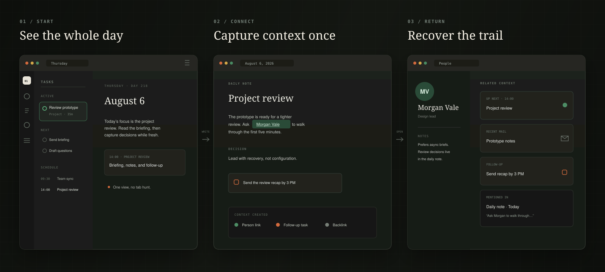

Run the day, not the apps
Your daily note, schedule, and tasks share one working surface.
A local-first workspace for relationship-heavy work
Woodshed connects your calendar, inbox, notes, tasks, and people. Prepare for a meeting, capture the follow-up, and find the whole trail later—without giving up control of your files.
Source preview available Pilot builds planned for Q3 2026 macOS first
01 / The product
One ordinary workday shows the difference.

Cadence puts today’s schedule, tasks, and working note in the same view.
Link a person or topic once. Woodshed carries that relationship into backlinks and related records.
Open a person later to recover the meetings, mail, notes, and follow-ups around them.
02 / Why Woodshed
The meeting lives in a calendar, its notes in a document, the follow-up in a task manager, and the relevant conversation in an inbox. Woodshed makes those records parts of one trail instead of five separate searches.
Your daily note, schedule, and tasks share one working surface.
People connect the meetings, messages, notes, and work around a relationship.
Markdown stays readable, editable, and useful without Woodshed.
03 / Local by design
Choose a folder on your computer or adopt one you already use. Woodshed turns its Markdown into a fast, connected workspace without requiring a Woodshed account or hosted backend.
Read the privacy model04 / Who it is for
Founders, managers, consultants, researchers, and anyone tired of reconstructing a relationship or project across separate tools.
Woodshed is a single-player macOS workspace, not a hosted team wiki. The source is public today; downloadable builds are not yet published.
Pilot / Q3 2026